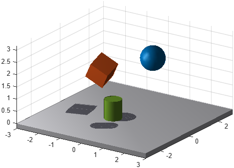

Shadow of bodies projected onto a plane
Class phx.PlanarShadow | Superclass: phx.base.Object
phx.PlanarShadow draws the shadow of one or more bodies as a
projection of their visual geometry onto a plane. The plane is given by a point
(Position) and a normal (Normal),
the light either by a direction (LightDirection) or by a point
source (LightPosition). The result is a flat translucent silhouette
redrawn at every frame; it is a graphical object only and takes no part in the simulation.
Besides looking better, a shadow makes a scene easier to read. A perspective view does not tell how high a body is above the surface or where it is going to land, and its shadow does.
The plane can be attached to a body with Anchor. Position and
Normal are then taken in the local frame of that body, so the plane travels and tilts with it, which
is what a shadow cast on a tilting plate or a moving platform needs. The light stays in world
coordinates in either case.
shadow = phx.PlanarShadow(bodies) creates the shadows of the
given bodies on the horizontal plane z = 0, lit from straight above. All bodies of one
object share the same plane and the same light; use several objects for several planes or lights.
| Argument | Type | Description |
|---|---|---|
| bodies | phx.Body (array) | The bodies that cast the shadow. |
| Property | Type / Default | Description |
|---|---|---|
| Anchor | phx.Body.empty | Body the plane is attached to. Position and Normal are then taken in its local frame and the plane follows it. Empty keeps the plane fixed in the world. |
| Position | [0 0 0] | Point lying in the shadow plane, in the local frame of the anchor. |
| Normal | [0 0 1] | Normal of the shadow plane, in the local frame of the anchor. |
| LightDirection | [0 0 -1] | Direction of the parallel light, in world coordinates. Must not be parallel to the plane. |
| LightPosition | [] | Position of a point light source, in world coordinates. When set, the light diverges from that point and LightDirection is not used. |
| Offset | 0.002 | Distance of the shadow above the plane, to keep it clear of the surface it is drawn on. |
| Alpha | 0.4 | Opacity of the shadow, from 0 (invisible) to 1 (opaque). |
| Extent | [Inf Inf] | Half-sizes of the shadow area within the plane, measured from Position along the plane axes. Keeps the shadow on a finite surface such as a plate. |
| Detail | 1 | Fraction of the faces kept when the geometry is cached, decimated with reducepatch. Worth lowering only for bodies with a very large mesh; see below. |
| Color | [0.1 0.1 0.14] | Color of the shadow (inherited from phx.base.Object). Assigning it resets the shadow to opaque, so set Alpha after Color, not before. |
The shadow is a projection onto one plane, not a rendered shadow. Bodies do not shadow each other, nothing shadows itself, and nothing blocks a shadow: it is drawn even where an obstacle stands between the body and the plane. A body on the far side of the plane casts nothing.
Overlapping translucent triangles add up, so with Alpha below 1
the silhouette shows edges where the projected front and back faces, or the shadows of two bodies,
cross each other. Alpha = 1 gives a clean silhouette.
Extent clamps the shadow to the given area instead of clipping
it, so a shadow reaching past the boundary is squashed against it and one entirely outside the area
collapses to nothing.
The projected geometry is read from the bodies when the simulation pipeline is built. Replacing
the Shape of a body afterwards is not picked up until the pipeline
is rebuilt (see phx.Simulation). Deleting the anchor removes the
shadow.
Whether a body is behind the plane is decided by the centre of its geometry, so a body that the plane cuts through keeps casting until its centre passes, and the part behind the plane is projected to the wrong side of it. Neither shows on a floor that bodies rest on rather than sink into.
Every redraw re-projects the bodies that moved and uploads the whole silhouette in one piece, so the cost follows the total mesh size of the cast bodies rather than their number. Fifty simple bodies are cheap; one body with a large imported mesh is what makes a shadow expensive. There is also a fixed cost per object and per redraw that no setting removes, so a shadow of a body with a few thousand vertices costs about the same as a shadow of a simple box.
Detail trades silhouette accuracy for that vertex count, and how
much it buys depends on how large the mesh is. On a body of 82000 vertices, keeping a quarter of
the faces cut the per-redraw cost of the shadow by a factor of three; on a body of a few thousand
vertices the same setting shaves off a few percent, because the fixed cost dominates there. The
silhouette itself survives the decimation well: a teapot mesh cut to a tenth of its faces differs
from the full one by a thin fringe along the outline.
clf; view(3); axis equal; grid on; camlight headlight; phx.Body("Type", "static", "Position", [0 0 -0.1], ... "Shape", {"Box", "Size", [6 6 0.2]}); b1 = phx.Body("Position", [-1.2 0.2 2.2], "EulerAngles", [0.4 0.5 0.2], ... "Shape", {"Box", "Size", [0.8 0.8 0.8]}); b2 = phx.Body("Position", [0.9 0.6 3.0], "Shape", {"Sphere", "Radius", 0.5}); b3 = phx.Body("Position", [0.2 -1.1 1.3], "Shape", {"Cylinder", "Radius", 0.35}); phx.PlanarShadow([b1 b2 b3], "LightDirection", [-0.4 -0.3 -1]); sim = phx.Simulation; sim.step(0.35, 70, 2); delete(sim);

With Anchor the plane is defined in the frame of the plate, here
its top face, and follows the plate as it tilts. Extent keeps the
shadow on the plate when the ball rolls over the edge.
plateSize = [4 4 0.2]; plate = phx.Body("Type", "kinematic", "Shape", {"Box", "Size", plateSize}); ball = phx.Body("Position", [1.5 1.5 2], "Shape", {"Sphere", "Radius", 0.3}); phx.PlanarShadow(ball, "Anchor", plate, "Position", [0 0 plateSize(3)/2], ... "Extent", plateSize(1:2)/2, "Alpha", 0.35);